“Kenny Wheeler’s Music and the Craft of Musical Composition”
Because of its improvisational nature, some of the analytical methods created with Western art music in mind have not seen significant use in examining jazz. For this study, the theory for musical analysis that Paul Hindemith presented in his 1937 book, The Craft of Musical Composition, will be applied to “Sweet Time Suite, Part 1: Opening” from Kenny Wheeler’s Music for Large and Small Ensembles.
As has been discussed Kenny Wheeler was one of the exceptional composers of modern jazz. As was discussed, John Abercrombie played guitar on Music for Large Ensembles, and describes Wheeler’s music:
His music was kind of timeless; it just kind of seemed like it covered a wide range of the tradition and forward thinking, but again, it was all about melody, for the most part, about melody and harmony, which is what I love the most I think… it’s just beautiful music. I mean, that’s all I would say, and I would say anybody that’s not aware of him—they should really listen to him because he does kind of bridge a certain gap to me, I mean, he kind of takes the tradition to a different place because of his unusual phrasing… But he still comes from the tradition, you know, and that’s what I love about it.[1]
In his liner notes for the album, Steve Lake says, “Music for Large and Small Ensembles is the most comprehensive of Kenny Wheeler’s recordings to date. It could almost be titled The Complete Wheeler.”[2]
In interviews, Kenny Wheeler cited Paul Hindemith as one of the composers that influenced him most:
I love a lot of classical music, from very early music such as Gesualdo and Byrd up to the present day… and I like to be affected somehow by music. I was very much affected by Paul Hindemith’s “Mathis der Mahler,” I especially liked the quartal harmonies, which reminded me a little of McCoy Tyner’s music.[3]
Wheeler has also said that he studied out of Hindemith’s book, Traditional Harmony. [4] In the preface for Traditional Harmony, Hindemith makes the distinction that the book is not meant to provide a foundation for The Craft of Musical Composition, and that the two series do not correlate.
There is no evidence that proves Wheeler read The Craft of Musical Composition. However, Wheeler’s citation of Hindemith’s music and writings as an influence and important component to his education makes Hindemith’s analytical methods defined in The Craft of Musical Composition an interesting source for analysis.
In the beginning of The Craft of Musical Composition, Hindemith explains what he sees as shortcomings in music theory, composition, and pedagogy. Of the material presented in the first part of the book, it is important to mention his thoughts on scale development. Hindemith writes, “For the melodic endeavor… series of tones are needed to guide into definite channels what would otherwise be arbitrary wandering.”[5] In other words, in order to write or play melodies one needs some sort of system in which to derive tones. Hindemith goes on to say:
The intervals used for this purpose may be measured in various ways. But however they are arrived at, they must be small enough so that the progression from a tone to an adjacent tone is felt as a step and not a skip... and in the series there must be an easily discernible order.[6]
Another consideration for scale development is its use. Hindemith intends for the scale to serve melodic functions as well as harmonic. Hindemith writes:
If a scale is to perform both functions, the intervals must be such that the combinations of tones are as pure as possible (that is, consist of intervals such as are contained in the lower reaches of the overtone series)… [However], the grouping of intervals must not be so rigid that it does not permit… the age-old use of impure intonation as an artistic means, the most extreme instance being the purposeful mistuning of subordinate tones in the melody, and the most minute divergence from the pitch being the vibrato, with countless melodic subtleties between those two extremes.[7]
Hindemith sets out more guidelines in scale development by saying, “a prerequisite for the construction of a usable scale is the division of the entire tonal supply into fairly large sections of equal range, lying one above the other, each section filled out with the tones of the scale.”[8] As in traditional theory, Hindemith separates his scale into octaves. This decision is only natural because the octave is the most universally recognized musical phenomenon; most every musical culture recognizes notes an octave apart as being of the same pitch class. Also, the octave is natural because it is found in the first two tones of the overtone series.
Hindemith’s construction of a scale comes directly from the overtone series. Using C with a frequency of 64 Hz as the fundamental tone, to get the second note in the series, add 64 Hz to the frequency of the original to yield another C at 128 Hz.[9] These are going to be the lower and upper limits of the scale, so each new scale tone’s frequency has to lie within 64 and 128 Hz.
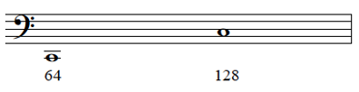
To find the next note in the series, add another 64 Hz to the frequency, making the third note in the series G (192 Hz). Since this is outside the scale, divide by two to yield a G with a frequency of 96 Hz. After this, Hindemith creates a rule; “to arrive at each new tone of the scale, divide the vibration-number of each overtone successively by the order-numbers of the preceding tones in the series.”[10] The third tone of the series, a C with a frequency of 256 Hz, yields an F (85.33 Hz) when divided by three.
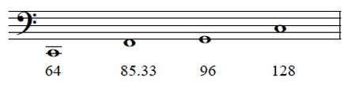
next overtone is an E (320 Hz). Dividing by two will only yield an E still outside of the scale range, dividing by three provides the scale an A (106.66 Hz), and dividing by four, introduces an E (80 Hz) that is within the range of the scale.
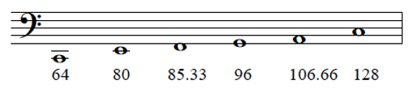
The next overtone is G (384 Hz). Dividing by two yields an out of range G, dividing by three yields C, which the scale already has, dividing by four yields another G, which is not needed, but dividing by five yields an E-flat (76.8 Hz). The next overtone, the sixth note of the series, is not used in creating the scale.
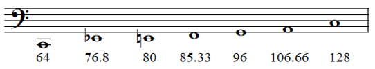
To continue, Hindemith considers the relations of each successive tone of the original series as if it were considered to lie higher in the series.[11] Taking the third overtone, G (192 Hz), and treating it as the fourth, fifth and sixth tones of the series yields no new notes. Treating the fourth overtone, C (256 Hz), as the fifth and sixth tones yields an A-flat (51.2 Hz), the octave (102.4 Hz) of which fits in the scale, and F, which is already present the scale. Again, since the sixth overtone becomes too convoluted to yield exclusively usable results, it is not suitable for scale building purposes. So in order to continue, Hindemith treats each scale degree already present as its own fundamental tone.
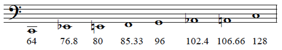
Taking G (96 Hz) as a new fundamental, the third note in the series is D (288 Hz), which fits in the scale when divided by four (72 Hz). The next overtone in this series, G, produces no new tones since it has been dealt with previously as the sixth overtone of C.
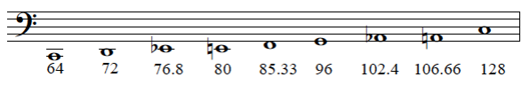
Using F (85.33 Hz) as a fundamental, one can use its fourth overtone, F (341.33 Hz), divide it by three to find B-flat (113.78 Hz), and divide it by five to find a D-flat (68.27 Hz). Using E (80 Hz) as the fundamental, divide its third overtone, B (240 Hz), by two in order to find a usable B (120 Hz).
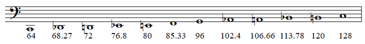
Using E-flat and A-flat as fundamentals does not yield any usable results, which exhausts the possibilities from the “sons” of C. Looking at the scale, Hindemith is missing just one note, the tritone of C, F-sharp/G-flat. This makes the tritone the most distantly related note to its fundamental.
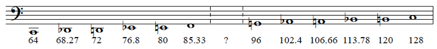
To find the tritone and complete the scale, Hindemith uses the “grandchild” of C, B-flat (113.78 Hz), as a fundamental. Taking B-flat’s second overtone, B-flat (227.56 Hz), and dividing by five yields G-flat (91.02 Hz).
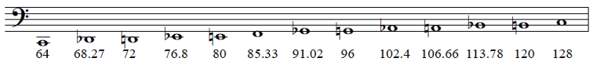
Now the scale is constructed, and the result is a chromatic scale. It would have been simple enough to say that Hindemith bases his theory on the chromatic scale instead of the major/minor diatonic system, but these details illustrate Hindemith’s point that the chromatic scale can be constructed using phenomena found in nature. It also illustrates an important point to Hindemith’s theory: the importance of each tone of the chromatic scale is directly related to the fundamental. When one lines up the tones according to the order in which they were found, Series 1 results. [12] In The Craft of Musical Composition, Hindemith says, “the values of the relationships established in that series will be the basis for our understanding of the connection of tones and chords, the ordering of harmonic progressions, and accordingly the tonal progress of compositions.”[13]
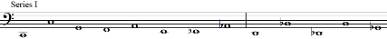
By taking the tones of Series 1 and comparing them to the fundamental, one finds every interval possible in the Western music tradition. The order of these intervals creates Series 2. The octave does not provide much meaning harmonically, but starting with the perfect fifth and moving to the right, the intervals decrease in harmonic importance.
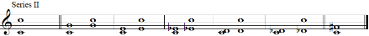
According to Hindemith, most intervals have roots, because there is usually one tone that is subordinate to the other. To find which note of an interval is dominant over another, one uses combination tones. While one tone sounding contains a series of overtones heard above it, when two tones are sounded simultaneously, additional tones are involuntarily produced, which are combination tones. The frequency of a combination tone is the difference between the frequencies of the directly produced tones of the interval. If a tone of the originally produced interval is doubled by a combination tone either in unison or in the octave, this gives that tone dominance over the other.
In the example below, there is a G with a frequency of 192 Hz, and a C with a frequency of 128 Hz. Subtracting 128 from 192 yields 64, which is also a C (64 Hz). Since the fundamental C is doubled by the combination tone, C is the root of the interval. This means the interval of a fifth’s root will always be the lower tone.
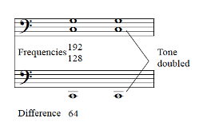
Finding the roots of chords is a simple process; just find the strongest interval according to Series 2, disregarding the octave, and find the root of that interval. The notes can be more than an octave apart, and if the chord contains two or more equal intervals that are the “best” intervals, use the lowest pitched.
Hindemith classifies chords into six categories, split into two groups, A and B, each containing three sub-groups. Group A contains all chords without tritones, and Group B contains chords with tritones.[14]
Chords in sub-group I are no more than three voices and do not contain any seconds or sevenths. This is the strongest sub-group and best for concluding phrases and pieces. Sub-group one separates into two sections; I1, chords in which the root and bass tone are the same, and I2, chords in which the root is not the bass tone. Hindemith says the only chords that fit the criteria for sub-group I are the major and minor triads.[15]
Chords in sub-group II are chords of three or more voices and are limited to the intervals of sub-group I, but can also contain major seconds and minor sevenths. This sub-group can be broken up into a few categories. IIa contains the minor seventh, but no major second. IIb can contain the major second as well as minor seventh. IIb1, the root and bass are the same. IIb2, the root and bass are different. IIb3 chords contain multiple tritones.[16]
Chords of sub-group III are chords of any number of tones, do not have any tritones, and contain seconds and sevenths. Again, this sub-group separates into two categories; III1, the root is in the bass, and III2, the root is not the bass tone. Sub-group IV chords can have as many tritones, minor seconds, and major sevenths as needed. When referring to this group, Hindemith says, “all the chords that serve the most intensified expression, that make a noise, that irritate, stir the emotions, excite strong aversion—all are home here.”[17] Again, if the root is the bass, it is IV1, and if the root is not the bass it belongs to IV2.[18]
Sub-groups V and VI are chords that have unclassifiable roots. These are mostly chords that are symmetrical. Though Hindemith says to find the root you just use the lowest, strongest interval, he still makes these categories. Sub-group V includes the augmented triad and quartal chords in their most condensed form, because if it were inverted, a fifth would be created, which would become the dominant interval. Sub-group VI contains the diminished triad and diminished seventh chord.[19]
These chord classifications represent the varying level of consonance and dissonance or stability of different chord types. The lower the number, the less tension created by the chord. Chords labeled as I are more stable than those labeled III, and those labeled IIIa are more stable than those labeled IIIb, and so on.
The excerpt below shows the first three measures of Wheeler’s “Sweet Time Suite, Part 1” with labels below each of the chords. In all but one of the chords, the tritone is absent, so they must be Group A, and there are no chords in this excerpt with less than four voices, so none of them can belong to sub-group I, and all of their roots are identifiable, so none of them can belong to sub-group V. Also, each chord without the tritone have their roots in the bass, classifying them as III1. The root of each of the chords is directly below them in the example.
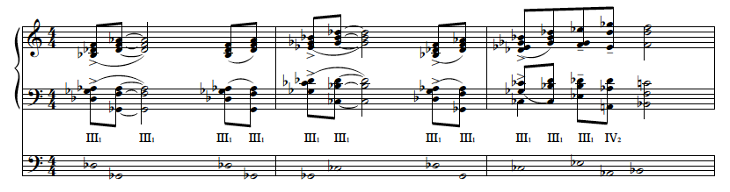
Opening measures to Kenny Wheeler's Sweet Time Suite
The only chord in this passage containing a tritone is the second to last chord of the excerpt. Since it has the tritone, it must belong to Group B. The bottom two notes are a major seventh apart, which means it cannot belong to sub-group II, and there is an identifiable root, meaning this chord must belong to sub-group IV. The strongest interval is the fifth between the A-flat and the E-flat, making A-flat the root; since A-natural is the bass note, not the A-flat root, the chord is classified as IV2. Typically one would not spell a chord to include both A-flat and A-natural, but the A-natural is used as the leading tone to B-flat, and the A-flat is used because it is the root of the chord and better fits the key of the piece. So, looking at these measures, Hindemith’s method shows that there is not much variance in the tension from chord to chord until the last two chords.
Hindemith defines this method of harmonic analysis as harmonic fluctuation. In order for harmonic fluctuation to take place, chords of different values must be present, even if the difference in value is very slight. Tension can fluctuate between chords from sub-group IV moving to sub-group I, or, for more minute fluctuation, chords classified as I2 moving to I1. [20]
Looking at “The Sweet Time Suite, Part 1” as a whole—located on pages 130 and 131—the analysis illustrates the harmonic tension does not fluctuate significantly throughout the excerpt. The section of the analysis consisting of Roman numerals and labeled “fluctuation” shows the majority of the piece consists of III1 chords, occasionally moving to and from II and IV chords, which leaves few examples to illustrate harmonic fluctuation. The phrase with the greatest fluctuation starts on beat four of measure five and ends with the half note starting measure seven. The phrase begins with five III1 chords before showing any harmonic fluctuation by moving to a IIb2 chord. After the IIb2 chord, the tension increases with a IV1 chord, and increases even more with the IV2 chord that follows. After the IV2 chord, the phrase resolves on a III1 chord. Another example of harmonic fluctuation in this piece is in the last two measures. This example shows a nice gradual release of tension. First, the tension builds with a III1 chord moving to a IV2, then moves to a IV1 chord which releases a little bit of tension before resolving back to a III1 chord.
Those accustomed to more traditional harmonic analysis might wonder how harmonies can be said to resolve without any consideration of the chords’ root movement. It is true that in Hindemith’s theory as presented so far, harmonic fluctuation pays no mind to root movement. However, Hindemith addresses root movement separately. The succession of the roots of chords creates what Hindemith calls a degree-progression. Taking the strongest intervals found in the degree-progression, one could decide tonal centers as well as the tonality of a piece.[21] The perfect fifth carries the most significant harmonic weight, followed by the fourth, then the third, the sixth, and so on. A cadence that proceeds from the subdominant to the dominant before ending on the tonic is the strongest cadence.
In the last couple of measures, we find a B-flat root on the first chord of measure fourteen, followed by two A-flat roots before resolving to D-flat on beat one of measure fifteen. This motion of the five to the one (A-flat to D-flat), just as in traditional theory, creates a strong argument for D-flat to be the tonal center. Hindemith compromises his theory by saying if a tone is repeated enough, or if it is long enough, it does not matter where the degree-progression leads; a note repeated or played long enough can carry enough weight to show itself as the tonal center. However, the strong resolution to D-flat as the last chord of “Part I,” and the D-flat’s appearance throughout the form supports the argument for D-flat as this piece’s tonal center even though many phrases do not resolve to D-flat.
A problem in chord identification arises in the last chord of the piece. Looking at the top two lines of the analysis, we notice the A-flat in the bass with the D-flat above it and the E-flat above both. According to Hindemith, this should be an A-flat rooted chord since the fifth created with the E-flat would be the strongest interval. However, it can be argued that the D-flat and the A-flat are so prominent when heard, that this interval of a fourth should be considered the dominant interval. Since the fourth is being treated as the best interval, the top note, D-flat, is the dominant tone and the root of the chord.
Another important idea in Hindemith’s system of analysis is the two-voice framework. Hindemith says the bass voice and the most important of the upper voices must create, on their own, an interesting piece of music that has a balance of tension and release.[22]
With regard to melodic analysis, Hindemith says that melodies form degree progressions of their own since melodies are just arpeggiated chords separated by non-chord tones. Since each note is technically a part of a different chord in this piece, it is difficult to find a convincing degree-progression in the melody.[23] Included in the analysis on pages 130 and 131, however, is an attempt to label degree progressions in order to show how one could find melodic tonal centers. The first five measures have been bracketed as a D-flat tonal center. Within those five measures there is also an argument for a B-flat tonal center for that phrase. The pick-up to measure six all the way to the first beat of measure eight is argued as a possible F tonal center, measure eight and nine show a D-flat center, and measures nine and ten resolve to G-flat. The melodic tonal center moves to A-flat in measure eleven before resolving to a final D-flat in the last three measures.
Another way to analyze melody is by using step progression. Hindemith says, “the primary law of melodic construction is that a smooth and convincing melodic outline is achieved only when these important points form a progression in seconds.”[24] “These important points” refers to highest notes, lowest notes, longest notes, or any other note that can be considered prominently featured. One cannot help but think of principles of Schenker’s theory for analysis when it comes to this principle; that behind every melody is some sort of stepwise movement. On the line labeled “step progression” notice the most significant step progressions in this excerpt. The connection of the D-flat on the “and” of one in measure two, to the C on beat three of measure seven, to the B-flat on beat two of measure eight, to the A-flat on beat three of measure twelve, and the descent in seconds down to a D-flat in measures thirteen through fifteen shows the most prominent step progression. Another important step progression shows ends of phrases making their way down in seconds. This step progression starts on the F on beat one of measure seven, moves to the E-flat on beat one of measure ten, and concludes on the D-flat in measure fourteen. To reference the Schenkerian paradigms, the first step progression discussed shows, arguably, an 8-7-6-5-4-3-2-1 primary line and the second perhaps a 3-2-1 primary line.
There are shortcomings in using Hindemith’s method for analysis in jazz. The principal problem is its harmonic analysis. Since there is not uniform voicing in rhythm sections, analyzing the harmony (finding roots, two-voice frameworks, etc.) in a combo’s performance can be problematic. Now, the composition in question here is not a small ensemble performance, but rather a big band arrangement. Indeed, this excerpt was able to work as well as it did because the rhythm section was absent. Yet, even in this ideal musical situation, Hindemith’s theory reveals certain limitations, for example the exceptions that had to be made when finding the roots of chords, or the issue of ascertaining the work’s tonality. However, despite these deficiencies, The Craft of Musical Composition offers a distinctive way of approaching harmony that might prove productive in jazz analysis.
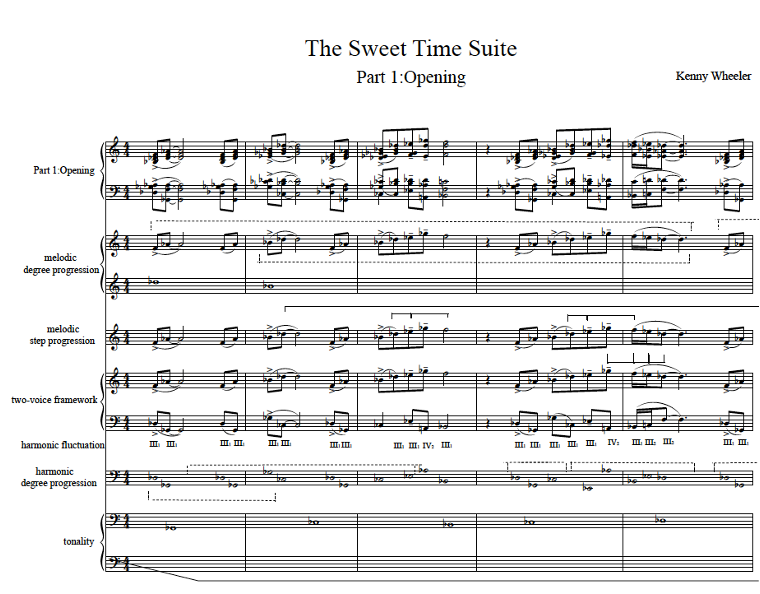
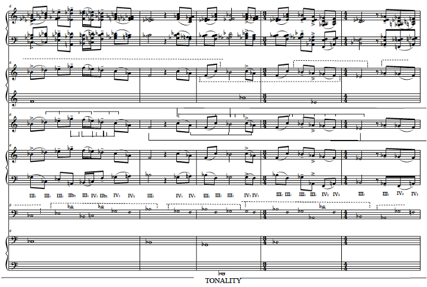
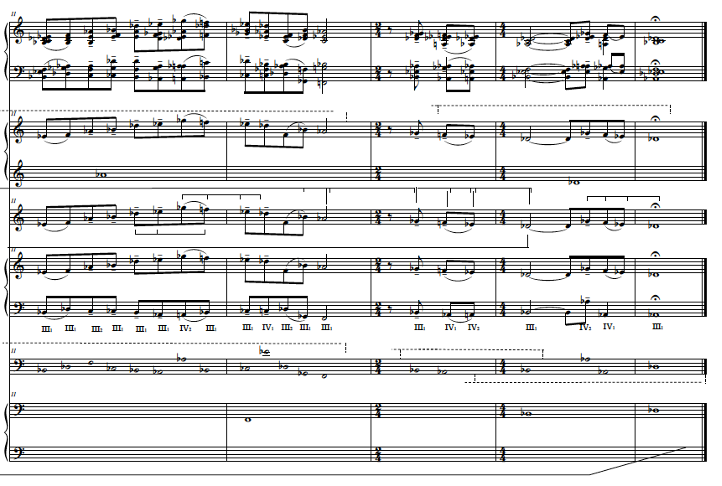
[1] John Abercrombie, interview by the author, 23 April 2015, Newark, tape recording.
[2] Steve Lake, liner notes to Kenny Wheeler, Music for Large and Small Ensembles, ECM 1415/16, 1990, compact disc.
[3] Fred Sturm, “Kenny Wheeler, Evolved Simplicity,” Jazz Educators Journal, March, 1998, 45.
[4] Gene Lees, “An Absolute Original: A Profile of Kenny Wheeler.” The Jazz Report, Spring 1995, 22.
[5] Paul Hindemith, The Craft of Musical Composition: Book I-The Theoretical Part (New York, NY: Associated Music Publishers, Inc., 1937), 24-25.
[6] Ibid. 25.
[7] Ibid. 25.
[8] Ibid. 25.
[9] These frequencies are not derived using standard A4=440 tuning. The frequencies used in this study come from Hindemith’s Craft of Musical Composition, in which A4=426.64.
[10] Ibid. 34.
[11] Ibid. 35.
[12] Ibid. 53-56.
[13] Ibid. 56.
[[14] Ibid. 95-96.
[15] Ibid. 101-102.
[16] Ibid. 102-103.
[17] Ibid. 103.
[18] Ibid. 103.
[19] Ibid. 103-104.
[20] Ibid. 115-121.
[21] Ibid. 121-126.
[22] Ibid. 113-115. In the second volume of Hindemith’s Craft of Musical Composition, he goes into greater detail on the two-voice framework, but I am concerned only with the ideas presented in book one.
[23] Ibid. 183-187.
[24] Ibid. 193.